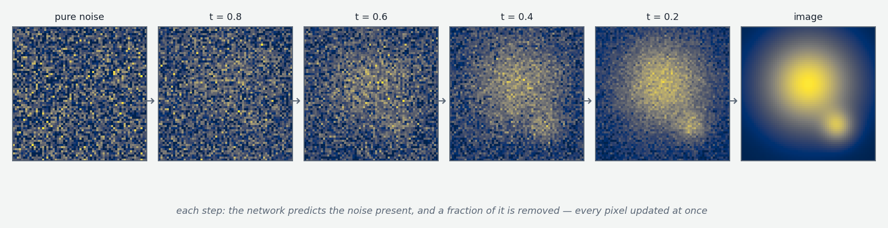
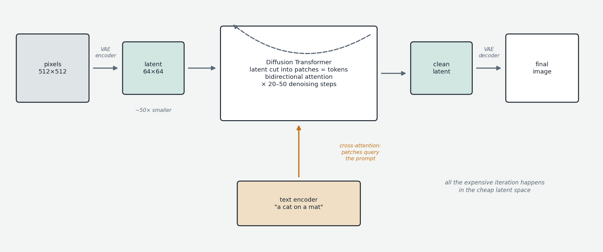

The core course described one generative paradigm: autoregressive next-token prediction. This first "beyond text" chapter covers the other paradigm that dominates a major modality — diffusion, the engine of modern image (and video) generation — both because the systems matter in their own right and because Chapter 10's diffusion language models are incomprehensible without this background. The headline: image generation works on a fundamentally different generative principle, yet is built from mostly the same architectural parts.
Why images resist autoregression
Text generation's unit of output is the token, and tokens are inherently sequential. An image is not: there is no natural "first pixel," and every pixel relates to every other through spatial structure, simultaneously. You can impose an order — generate pixels row by row — and early models did, but it fights the data's nature. Diffusion instead generates the entire image at once, achieving coherence through temporal refinement rather than spatial sequencing: start from pure random noise, and over 20–50 iterations, run a network that predicts the noise present in the current image and partially removes it, gradually revealing a coherent image. Every pixel is updated at every step.

Training makes the trick comprehensible: take real images, corrupt each with a randomly chosen amount of noise, and train the network to predict the noise that was added — across all noise levels. Once it can do that, inference simply runs the corruption in reverse: from 100% noise, predict-and-remove, step by step, down to 0%. The trajectory traces a path through the network's learned distribution of what real images look like. (The mathematical underpinnings connect to score matching and stochastic differential equations; the operational picture — a denoiser called iteratively — suffices here.)
Latent diffusion: the VAE as tokenizer-equivalent
Running diffusion directly on pixels is brutally expensive (a 512×512 RGB image is ~786,000 values per network call). Modern systems instead work in a compressed latent space. A separately-trained Variational Autoencoder (VAE — covered as a generative family in its own right in Chapter 09b) provides an encoder compressing an image ~50× into a small grid of continuous values, and a decoder reconstructing pixels from it, trained together so decode(encode(image)) ≈ image. Diffusion then operates entirely on these small latents; only the final clean latent is decoded to pixels. This is latent diffusion — introduced in 2022, popularized by Stable Diffusion, now universal. The structural analogy to the text stack: the VAE is the tokenizer-equivalent, the boundary between human-facing data and model-internal representation — except the "vocabulary" is a continuous space rather than a discrete list.

The denoiser: from U-Nets to Diffusion Transformers
For years the denoising network was a U-Net — a convolutional architecture (convolutions apply the same local pattern-detector across all positions, matching images' translation structure) that downsamples through stages and upsamples back with skip connections, operating at multiple spatial scales at once. Stable Diffusion 1–2 and the original DALL-E 2 used U-Nets. The field has since shifted to Diffusion Transformers (DiT, 2022): cut the latent into a grid of small patches, project each patch to a vector — exactly the embedding step of Chapter 00a, with patches as tokens — and process them with a standard transformer stack. Attention here is bidirectional (no causal mask — there is no left-to-right order to protect; every patch attends to every patch), and position is injected with 2D analogues of the schemes in Chapter 00d. DiTs scale better with size than U-Nets, and power Stable Diffusion 3, Flux, and the video generators (Sora, Veo — diffusion extended along the time axis).
Conditioning: how text steers the image
Unconditional diffusion yields random plausible images; the interesting case is text-to-image. The prompt is processed by a separate pre-trained text encoder (CLIP's text tower, T5, or combinations) into a sequence of embeddings, which are injected into the denoiser via cross-attention: the same mechanism as Chapter 00b, except queries come from the image patches while keys and values come from the text tokens — every patch asks its questions of the prompt, and relevant text content flows into the image representation at every denoising step. One practical amplifier is universal: classifier-free guidance — run each denoising step twice, with and without the text conditioning, and push the prediction several times further in the direction of their difference. The guidance scale (≈ 5–10 typically) trades prompt adherence against image diversity and naturalness — loosely the temperature knob of the diffusion world, alongside the choice of step count and sampler (DDIM, Euler, DPM-Solver), which govern the denoising trajectory itself.
The contrast, and the hybrids
Set side by side: text models are autoregressive (one token per forward pass, causal attention, output built across many passes over a growing sequence); diffusion models are iterative-refinement (all positions at once, bidirectional attention, output refined across many passes over the same set of patches). Both are transformers inside; the role differs — directly emitting tokens versus predicting noise to subtract. Both condition on text; one by putting it in the sequence, the other by cross-attending to it.
The boundary is not absolute. Autoregressive image generation exists: the original DALL-E used a VQ-VAE — a VAE variant whose latent space is a grid of discrete tokens from a learned codebook — and generated those image-tokens left to right with a standard transformer; the approach is slower and historically weaker on global coherence, but it integrates naturally with text models, and it is the basis of unified multimodal systems (Chameleon-style any-to-any models, natively image-generating chat models) that tokenize every modality and process it all autoregressively. Audio generation splits the same way (diffusion for sound textures; autoregressive over neural-codec tokens for music). And the newest reformulations of diffusion itself — flow matching / rectified flow, used by Flux and Stable Diffusion 3 — keep the iterative-refinement paradigm with cleaner training dynamics. The cross-pollination runs in both directions: Chapter 10's diffusion language models import this entire chapter back into text.
The picture to keep
Image generation departs from the text playbook at the paradigm level — refine everything at once from noise, rather than emit pieces in order — but is a remix of familiar components: an encoder/decoder pair playing tokenizer (the VAE), transformer blocks playing the backbone (DiT, with bidirectional attention and 2D position), attention playing the text-conditioning channel (cross-attention), and a sampler-and-guidance layer playing the decoding policy. Different objective, same parts box — which is precisely why ideas now flow freely between the two paradigms.